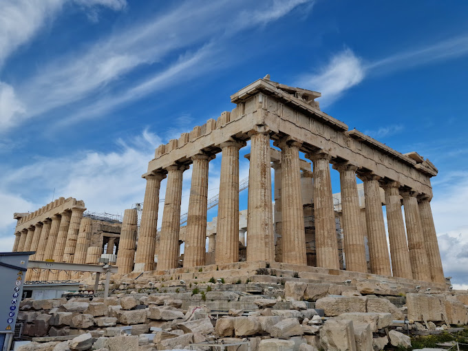
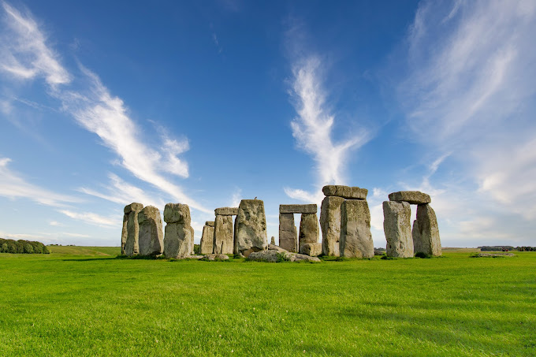

TOWER OF PISA
Leaning Tower of Pisa, medieval structure in Pisa, Italy, that is famous for the settling of its foundations,
which caused it to lean 5.5 degrees (about 15 feet [4.5 metres]) from the perpendicular in the late 20th century.
Extensive work was subsequently done to straighten the tower, and its lean was ultimately reduced to less than 4.0 degrees.

PARTHENON
The Parthenon is a former temple on the Athenian Acropolis, Greece, that was dedicated to the goddess Athena during the fifth century BC. Its decorative sculptures are considered some of the high points of classical Greek art, an enduring symbol of Ancient Greece, democracy and Western civilization.

STONEHENGE
Stonehenge is a prehistoric monument on Salisbury Plain in Wiltshire, England, two miles west of Amesbury. It consists of an outer ring of vertical sarsen standing stones, each around 13 feet high, seven feet wide, and weighing around 25 tons, topped by connecting horizontal lintel stones.

EIFFEL TOWER
The Eiffel Tower is a feat of ingenuity as much as it is a famous landmark. This structure of
8,000 metallic parts was designed by Gustave Eiffel as a temporary exhibit for the World Fair of
1889. Originally loathed by critics, the 330-meter-high tower is now a beloved and irreplaceable
fixture of the Paris skyline. Upon the first glimpse, you'll be impressed by the tower's delicate
airiness despite its monumental size. Next, the panoramas at each of the three levels will take your
breath away.

PROVENCE
Escape into a bucolic landscape of olive groves, sun-drenched rolling hills, and deep purple
lavender fields, with little villages nestled in the valleys and perched on rocky outcrops.
The vibrant scenery has enchanted many famous artists, including Cézanne, Matisse, Chagall, and
Picasso. The rustic natural beauty, country charm, and laid-back atmosphere of Provence allow the
region's art de vivre (art of living) to flourish. Sultry weather encourages leisurely strolls along
cobblestone streets and afternoons spent on sunny terraces of outdoor cafés.

CASTLE OF THE LOIRE VALLEY
Traveling through the Loire Valley gives the impression of stepping into a children's storybook.
Turreted fairy-tale castles grace a luxuriant countryside of dense woodlands and gently flowing
rivers. The entire Loire Valley, an area known as the "Garden of France," is listed as a UNESCO World
Heritage Site. Some of the Loire castles are medieval fortresses built on hilltops and surrounded
by ramparts. However, the most famous Loire châteaux are sumptuous Renaissance palaces that were
designed purely for enjoyment and entertainment, as an extension of court life outside of Paris.